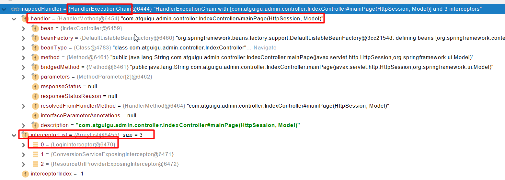
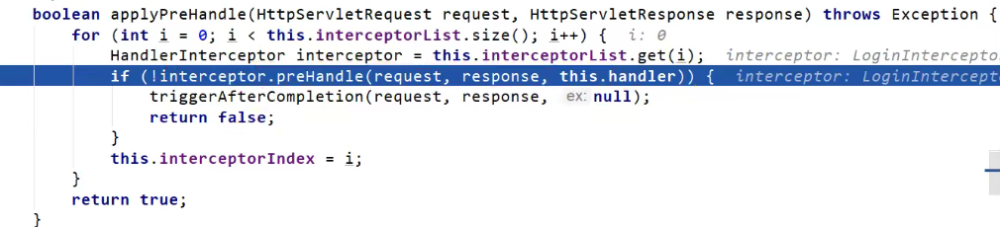
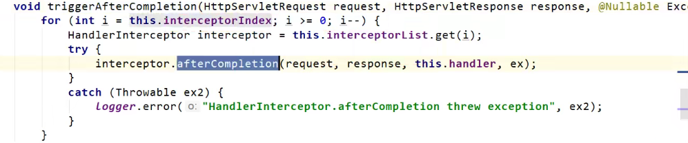
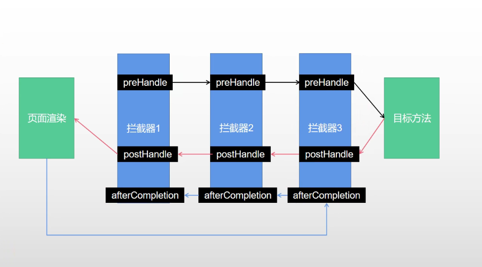

SpringBoot2-Web开发-拦截器+文件上传
11 15, 2021
SpringBoot Web开发
拦截器
HandlerInterceptor 接口
1
2
3
4
5
6
7
8
9
10
11
12
13
14
15
16
17
18
19
20
21
22
23
24
25
26
27
|
public class LoginInterceptor implements HandlerInterceptor{
@Override
public boolean preHandle(HttpServletRequest request,HttpServletResponse response, Object handler) throws Exception{
HttpSession session = request.getSession();
Object loginUser = session.getAttribute("loginUser");
if(loginUser != null){
return true;
}
request.setAttribute("msg","请先登录");
request.getRequestDispatcher("/").forward(request,response);
return false;
}
}
|
配置拦截器
1
2
3
4
5
6
7
8
9
10
11
12
13
14
15
16
17
18
|
@Configuration
public class WebConfig implements WebMvcConfigurer{
@Override
public void addInterceptors(InterceptorRegistry registry){
registry.addInterceptor(new LoginInterceptor())
.addPathPatterns("/**")
.excludePathPatterns("/","/login","/css/**","/fonts/**","/images/**","/js/**")
}
}
|
拦截器原理
- 根据当前请求，找到HandlerExecutionChain（可以处理请求的Handler以及Handler的所有拦截器）

- 先按顺序执行所有拦截器的preHandle方法

- 如果当前拦截器返回true（放行），则执行下一个拦截器的preHandle方法
- 如果当前拦截器返回false，就会通过if判断，执行triggerAfterCompletion方法

- 执行triggerAfterCompletion方法：倒序执行所有已经执行了的拦截器的afterCompletion方法
- 如果有一个拦截器返回false，直接跳出，不执行目标方法
- 所有拦截器都返回true，才执行目标方法
- 倒序执行所有拦截器的postHandle方法
- 前面的步骤有任何异常都会直接倒序触发afterCompletion方法
- 页面成功渲染后，也会倒序触发afterCompletion方法
流程：

如果执行拦截器2的时候出现了异常，那么就会倒序触发拦截器2 –> 拦截器1的afterCompletion方法
文件上传
页面表单
1
2
3
4
| <form method="post" action="/upload" enctype="multipart/form-data">
<input type="file" name="file"><br>
<input type="submit" value="提交">
</form>
|
文件上传代码
1
2
3
4
5
6
7
8
9
10
11
12
13
14
15
16
17
18
19
20
21
22
23
24
25
26
27
28
29
30
31
32
33
34
|
@PostMapping("/upload")
public String upload(@RequestParam("email") String email,
@RequestParam("username") String username,
@RequestPart("profileImg") MultipartFile profileImg, //单个文件上传
@RequestPart("photos") MultipartFile[] photos)
throws IOException {
if(!profileImg.isEmpty()){
String originalFilename = profileImg.getOriginalFilename();
profileImg.transferTo(new File("H:\\cache\\"+originalFilename));
}
if(photos.length > 0){
for (MultipartFile photo : photos) {
if(!photo.isEmpty()){
String originalFilename = photo.getOriginalFilename();
photo.transferTo(new File("H:\\cache\\"+originalFilename));
}
}
}
return "main";
}
|
自动配置原理
文件上传自动配置类- MultipartAutoConfiguration- MultipartProperties
自动配置好了 StandardServletMultipartResolver （文件上传解析器）
原理步骤:
- 请求进来，使用文件上传解析器判断（isMultipart）并封装（调用resolveMultipart方法，返回MultipartHttpServletRequest）文件上传请求
- 参数解析器来解析请求中的文件内容，封装成MultipartFile
- 将request中文件信息封装为一个Map (MultiValueMap <String, MultipartFile>)
tips: FileCopyUtils 文件复制工具类，方便实现文件流的拷贝( int copy(File in, File out) )